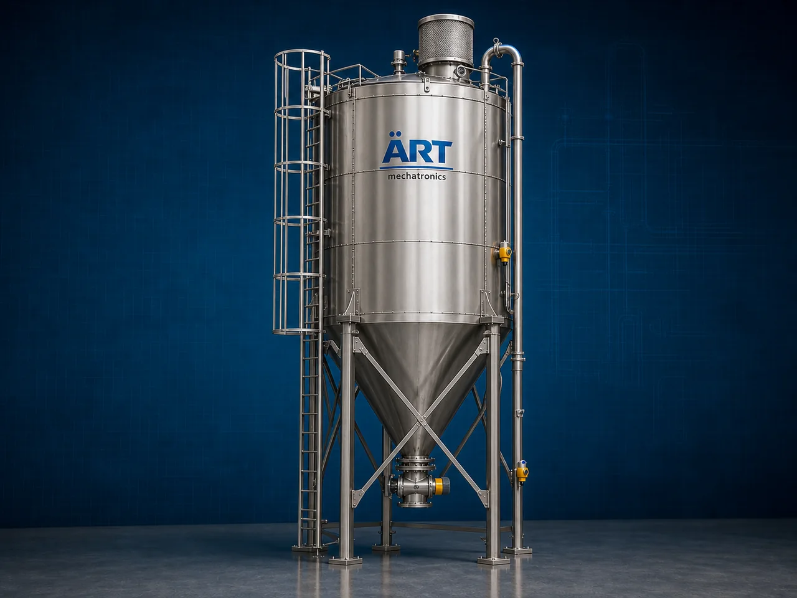

Silo Machine (Industrial Bulk Material Storage & Handling System)
A Silo Machine, also known as an Industrial Storage Silo or Bulk Material Silo System, is a large-capacity industrial storage equipment designed for safe storage, buffering, controlled discharge, and automated handling of grains, flour, powders, pellets, feed, cement, chemicals, seeds, biomass, and bulk materials.

About the Silo Machine
Silo systems are widely used for:
- Bulk material storage
- Automated material feeding
- High-capacity industrial buffering
- Continuous production supply
- Dust-free bulk handling
- Centralized storage management
The machine improves:
- Storage efficiency
- Production continuity
- Factory automation
- Material handling control
- Labor reduction
- Space optimization
Industrial silos are manufactured using:
- Stainless steel construction
- Mild steel construction
- Bolted or welded structures
- Hopper-bottom or flat-bottom designs
to ensure safe and reliable long-term industrial storage operations.
Silo machines are widely used in industries such as:
Grain processing industries
Flour mills
Feed industries
Cement industries
Food processing industries
Chemical industries
Plastic industries
Biomass and pellet industries
where large-volume bulk material storage and automated process feeding are essential.
The machine is highly suitable for:
- Grain storage
- Flour storage
- Cement storage
- Feed storage
- Pellet storage
- Powder material buffering
ART Mechatronics offers high-performance silo machines, engineered for heavy-duty industrial storage, automated bulk material handling, corrosion resistance, and reliable long-term performance.
Working Principle of Silo Machine
Bulk materials are loaded into silo using:
- Pneumatic conveying systems
- Screw conveyors
- Bucket elevators
- Chain conveyors
- Truck unloading systems
Silo stores large quantities of material safely under controlled conditions
Maintains continuous supply for industrial production systems.
Machine stores:
- Grains
- Flour
- Feed
- Cement
- Powders
- Pellets
- Seeds while protecting material from: Moisture Contamination Dust exposure Environmental damage
Material discharged through: Hopper bottom outlet Screw feeder Rotary airlock valve Pneumatic discharge system
Optional systems include: Level sensors Load monitoring PLC automation Aeration systems Temperature monitoring
Silo integrates with: Mixers Packaging machines Conveyors Processing plants Feeding systems
Types of Silo Machines
- 1. Grain Storage Silo
Designed for: ✔ Wheat, maize, rice, and grain storage applications
- 2. Flour Storage Silo
Suitable for: ✔ Flour mill and powder storage systems
- 3. Cement Silo
Uses: ✔ Cement and fly ash storage systems
- 4. Feed Storage Silo
Designed for: ✔ Poultry and animal feed storage applications
- 5. Stainless Steel Food Grade Silo
Suitable for: ✔ Hygienic food and pharmaceutical industries
- 6. Heavy Duty Industrial Silo
Designed for: ✔ Large-scale industrial bulk material storage operations
Industries Using Silo Machines
🌾 Grain Processing Industry Grain and seed storage systems 🌽 Flour Mill Industry Flour and powder storage systems 🐄 Feed Industry Poultry, cattle, fish, and pet feed storage systems 🏗️ Cement Industry Cement and fly ash storage systems 🍃 Food Processing Industry Food ingredient and bulk product storage systems ⚗️ Chemical Industry Powder and granule chemical storage systems ♻️ Plastic Industry Plastic pellet storage systems 🌱 Biomass & Pellet Industry Biomass and wood pellet storage systems
Features & Advantages
- High-capacity bulk material storage
- Continuous industrial production support
- Dust-free and contamination-free storage system
- Heavy-duty industrial construction
- Automated material feeding and discharge options
- Space-saving vertical storage design
- Corrosion-resistant and weatherproof construction
- Low maintenance and long service life
- Easy integration with industrial automation systems
Technical Highlights
Silo Type: Hopper bottom silo Flat bottom silo Bolted silo Welded silo Construction: Stainless Steel (SS304 / SS316) Mild Steel (MS) Storage Capacity: Small process silos to large industrial silos Discharge System: Screw conveyor Rotary valve Pneumatic discharge Features: Level sensors Aeration systems Dust collection systems Load monitoring Automation: Semi-automatic Fully automatic PLC-based systems
Turnkey Silo Storage Solutions
ART Mechatronics offers: Complete silo storage systems Bulk material handling solutions Pneumatic and conveyor integration systems Automated feeding and discharge systems Installation & commissioning After-sales service & AMC
Why Choose Art Mechatronics
Expertise in industrial bulk material handling systems Customized silo solutions for multiple industries High-performance and durable industrial construction Energy-efficient and reliable storage systems Proven industrial performance across sectors
Applications
Grain Processing Plants Flour Mills Feed Manufacturing Plants Cement Plants Food Processing Industries Chemical Industries
Industries that use the Silo Machine
Related Storage & Elevation machines
Get pricing & specs for the Silo Machine
Share the product, target capacity, current process and plant location. These details help our engineers discuss the right machine or line configuration.
One partner, from design to start-up
ART Mechatronics designs, manufactures, installs and commissions your Silo Machine solution with regional presence in India, UAE and Thailand.